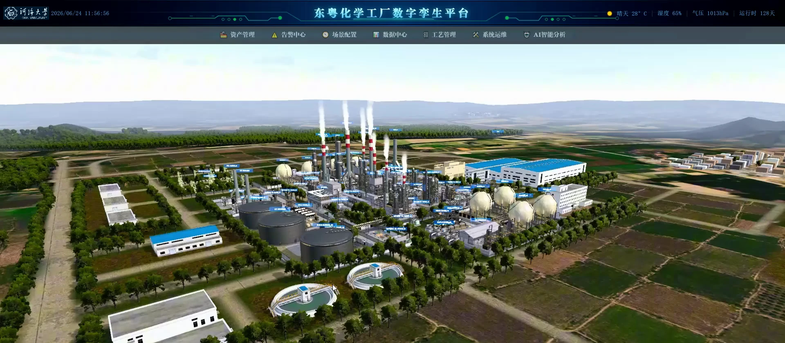
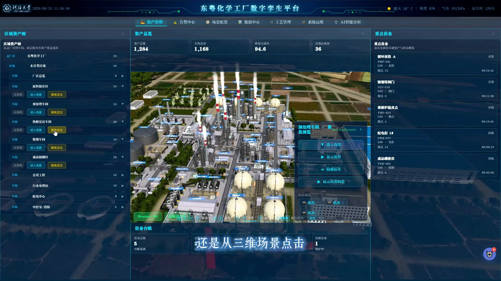

基于数字孪生的废塑料热解炼油智能工厂教学系统
以废塑料热解炼油工厂为工程场景，
把对象建模、数据接入与系统验证，
带入同一套实验教学。

从认识工厂，到构建并验证
一套数字孪生原型。
- 实验任务
- 28项
- 教学安排
- 8学时
- 学习阶段
- 4个
认识一座热解炼油工厂
从原料进厂到成品装车，沿着物料路线
理解装置、设备与管网的连接关系。
- 01原料进厂储存与输送
- 02破碎清洗原料预处理
- 03热解反应热解装置与工况
- 04精馏分离分离与介质输送
- 05成品出厂储罐与装车
对照工艺流程，
查看设备位置
工艺管理界面将流程、阀门配置和三维场景组织在一起。选择流程中的设备，即可对照它在厂区中的位置与连接关系。
- 原料液
- 产品油
- 蒸汽
- 冷却水
围绕设备，查看场景与数据
选择一个功能，查看对应界面，
也可以直接播放相关操作。

从设备条目
定位到三维现场
选择设备条目，相机聚焦到对应位置；点击三维设备，打开信息面板。空间位置与设备档案使用同一对象关联。
- 浏览厂区、车间与设备层级
- 查看设备信息和运行状态
- 验证面板与场景的双向定位
从对象建模到系统验收
四个阶段，逐步完成一套数字孪生原型。
每项任务都对应操作记录与验证结果。
自动化、计算机、软件工程、智能制造等专业
本科三、四年级学生
具备程序设计、数据库、计算机网络
与基础数据分析知识
任务配置、故障注入、对照测试
操作记录与实验报告
需求分析与对象建模
建立厂区、设备与测点的对应关系。先明确需要解决的问题，再组织资产、三维资源和数据字典。
| 实验任务 | 目标要求 | 验证方式 |
|---|---|---|
| 01分解产业需求 | 提出对象、数据与AI需求 | 提交需求及验收条件，反馈缺项 |
| 02设计系统架构 | 明确采集、孪生与AI边界 | 连接组件，检查依赖和隔离 |
| 03构建资产层级 | 组织厂区、区域及设备 | 编辑父子关系，反馈循环引用 |
| 04制定唯一编码 | 保证对象可追溯 | 配置编码，检测重复与冲突 |
| 05定义测点字典 | 统一类型、单位与质量码 | 编辑字段，检查类型及量程 |
| 06组织三维资源 | 建立设备层级及空间基准 | 调整层级与坐标，校验一致性 |
| 07配置对象映射 | 关联资产、模型与数据源 | 绑定对象，检测漏配和错配 |
需求清单、系统架构图、资产与测点字典、对象映射表
数据接入与质量治理
把数据接进来，也要验证它是否可靠。检查类型、单位、时间与质量，比较治理前后的结果。
| 实验任务 | 目标要求 | 验证方式 |
|---|---|---|
| 08配置数据连接 | 选择授权数据源与读取方式 | 设置接口，测试认证和连通 |
| 09解析样本字段 | 统一格式与单位 | 编辑解析映射，核对转换结果 |
| 10设置采样订阅 | 配置更新周期和消息主题 | 修改策略，测量延迟及开销 |
| 11校验时间与质量 | 识别乱序、缺失与冻结 | 标记样本，验证时间对齐 |
| 12治理异常数据 | 设计去重及坏值处理规则 | 执行治理，比较前后结果 |
| 13验证历史回放 | 保持对象及时间一致 | 选择窗口，核对曲线与事件 |
| 14测试中断补传 | 检查恢复及去重效果 | 模拟断网重连，核对丢失与重复 |
数据连接与解析配置、质量规则、回放与中断恢复测试记录
三维映射与状态联动
让同一设备在面板、场景与事件记录中保持一致。通过状态机、测试事件和操作记录检验联动。
| 实验任务 | 目标要求 | 验证方式 |
|---|---|---|
| 15绑定三维状态 | 将数据驱动到材质及标签 | 调整绑定，检查显示反馈 |
| 16构建双向定位 | 二维与三维指向同一对象 | 配置跳转，验证编码及读数 |
| 17设计设备状态机 | 定义状态、事件与转换条件 | 编辑状态图，检查冲突和死路 |
| 18配置事件规则 | 设定阈值、持续时间及恢复 | 提交规则，验证误触发与恢复 |
| 19验证拒绝逻辑 | 检验前置条件及审计 | 发送不合法教学操作，核对拒绝记录 |
| 20注入并定位事件 | 验证事件到对象的联动 | 发送测试事件，检查位置与时间 |
| 21完成事件闭环 | 检验确认、复核及回放 | 补全处置记录，核对状态流转 |
三维绑定与状态配置、事件规则、双向定位和处置闭环测试记录
AI 赋能、系统验证与复盘
为知识问答保留引用，为异常检测设置测试集。对照不同配置，完成验收并交付可复现的孪生原型。
| 实验任务 | 目标要求 | 验证方式 |
|---|---|---|
| 22建设技术知识库 | 建立有授权和版本的索引 | 选文档、配置切分，核验检索 |
| 23配置知识问答 | 建立检索与引用链路 | 调整检索参数，验证答案来源 |
| 24评测异常检测 | 区分训练验证与测试数据 | 提交样本，核算查准率与召回率 |
| 25比较AI配置 | 解释不同配置的效果差异 | 对照检索或检测参数，分析误差 |
| 26测试可信控制 | 验证拒答、权限与人工确认 | 提交无证据及越权请求，检查拦截 |
| 27执行系统验收 | 核对五类测试及版本证据 | 提交测试用例，修复失败项并复测 |
| 28交付并复盘 | 形成可复现的孪生原型 | 导出配置与报告，说明迁移条件 |
知识库与评测结果、系统测试用例、原型配置、实验报告与改进记录
用测试结果完成验收
核对对象映射、同步一致性、状态反馈、
AI 证据与权限隔离，保留配置和测试记录。
- 需求与架构
- 10%
- 建模与数据
- 25%
- 三维与联动
- 25%
- AI 与验证
- 20%
- 报告与复盘
- 20%
把操作带入三维空间
佩戴 MR 设备，通过手势与空间中的模型交互。演示记录了头戴设备操作和同步画面，展示平面界面之外的交互方式。
从现场信号
到三维交互
边缘网关接入测点数据，业务服务组织设备与事件，Web 面板和三维场景呈现同一对象。
01三维交互层Unity 3D
组织厂区、车间与设备模型，配置相机位置、设备聚焦和状态渲染。
02Web 可视化层Vue 3 · ECharts
通过管理面板、历史曲线和统计图表查看设备数据，与三维场景同步定位。
03业务服务层Java 微服务
组织设备、工艺、报警和用户权限，记录操作事件，为查询与追溯提供依据。
04边缘接入层边缘网关 · 工业测点
对接 PLC、DCS 与传感器，接入温度、压力、液位和电流等测点数据。
- 现场设备与测点连接
- 信号采集与数据转发
- 统一送入业务服务与可视化层
完整观看，也可按功能浏览
1080p 高清视频，保留原演示解说。
选择下方画面，直接进入对应章节。